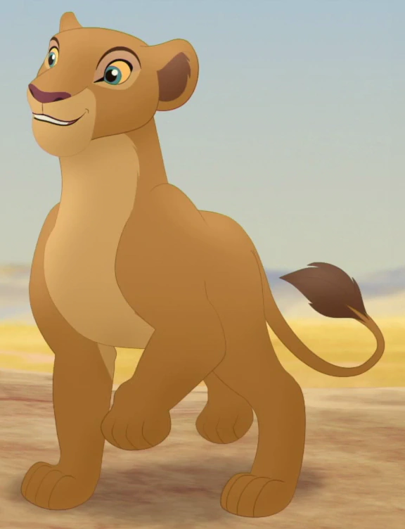
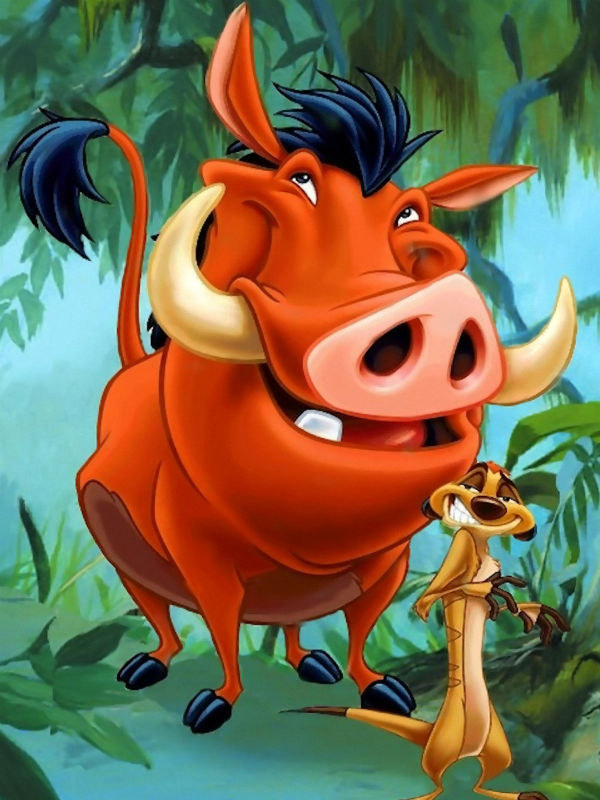
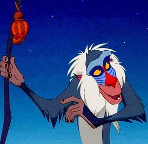

Mufasa ,o rei da floresta, é morto pelo seu irmão Scar com a tentativa de assumir o trono, e o próximo a ser morto por Scar e Simba ,filho de Mufasa, o próximo herdeiro do trono. Porém, Simba descobre a tentativa e foge então Scar assume o trono e destroi o imperio. Portanto, para que o império seja reconstruido, alguns corajosos vão a procura por Simba sabendo de todos os possíveis riscos que poderão passar. Logo, quem você escolhe para tentar encontrar simba e reconstruir o império?
Nala

Qualidades e Defeitos
- Agilidade
- Força
- Sente muita fome
Timão e Pumba

Qualidades e Defeitos
- Inteligência
- Têm baixa estatura e podem se esconder com
facilidade - Podem ser engolidos por animais maiores
Rafiki

Qualidades e Defeitos
- É o animal mais sábio de toda a floresta
- Tem percepção invrivel
- Por ser muito velho,não consegue camihar por
muitas horas seguidas